So, the other day I wrote the Fedora Got Game story and have been continuing to make my transition from Fuduntu which as you may or may not be aware announced that it would close it doors.
Initially, I had selected the Fedora 18 KDE 64-bit spin but found that it put a bit of a strain on my Netbook. Then, I opted to simply install the Xfce Desktop group onto the KDE spin. The problem with doing that is that your menu winds up having the combined items from both KDE and Xfce and so I opted to reinstall with the Xfce spin.
And I have made some tweaks to the appearance which I would like to share with you. Here goes.
With just a few simple changes, your Desktop's appearance and clarity can be dramatically improved.
Starting with Style, I chose to install Zukitwo. Open a terminal window and type:
1 | $sudo yum install zukitwo-\*-theme |
For Icons, I chose Faenza. Again from a terminal window type:
1 | $sudo yum install faenza-icon-theme |
For Font, I chose Google's Droid true type font. The difference in ease on eyes is dramatic. From a terminal window type:
1 | $sudo yum install google-droid* |
Then add some really nice Desktop backgrounds by typing from the terminal:
1 | $sudo yum install verne-backgrounds-extras-xfce |
Now open your menu, Settings, Settings Manager, and select Appearance. On the Style tab, select the Zukitwo theme:
| 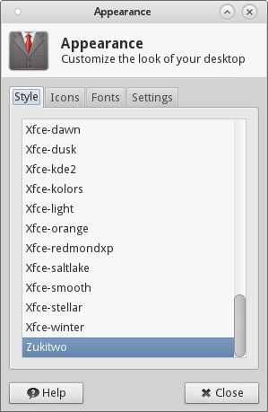 |
| Select the Zukitwo Xfce theme |
Then, select the Icons tab and select the Faenza icon set:
| 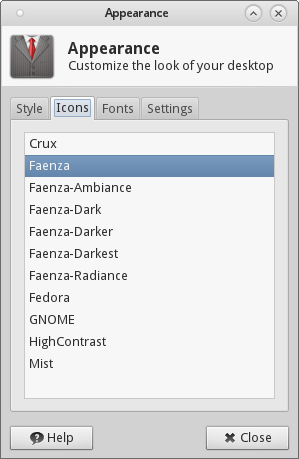 |
| Select the Faenza Icon set |
On the Fonts tab, set the font to Droid Sans.
| 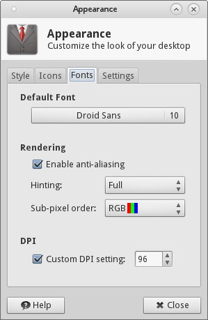 |
| Select the Droid Font, enable anti-aliasing |
As per the above screenshot, Xfce out of the box uses a default 12 point font, but I prefer 10 point and have set Droid Sans to use that size. Also, I have enabled anti-aliasing, full hinting with rgb pixel order. Be sure to have a check on the 96 dpi setting. Whether you prefer to show images on the menu and having accelerator keys is up to you from the settings tab--I have all checked.
On the Desktop, right-click and select Desktop Settings. As per the screenshot below, I selected verne-skye.jpg as my desktop background.
| 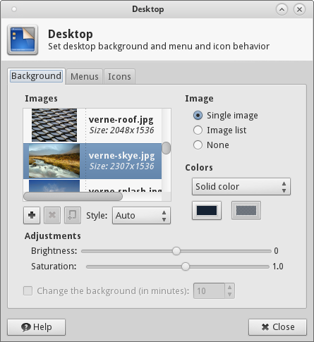 |
| Select verne-skye.jpg background |
Next, go to the menu again, Settings, Settings Manager, Window Manager Tweaks, then click on the Compositor, then make sure to check all boxes per the screenshot below:
| 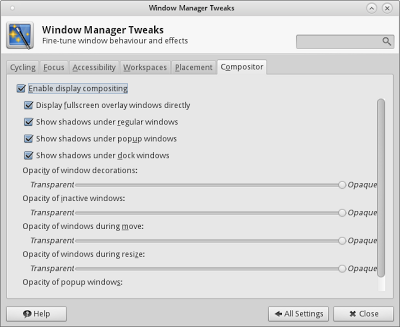 |
| Enable compositing from the Window Manager Tweaks Compositor Tab |
Now, when a brand new Xfce install has been finished upon login, you will be prompted for Xfce to use the 'default' panel layout (top panel and bottom dock) or to select single menu. I chose the default. Right-click the top panel, Panel, Panel Settings. Click on the Appearances Tab. Set the alpha channel to 25.
| 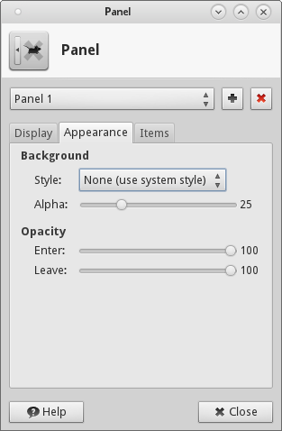 |
| Set top panel appearance tab alpha channel to 25 |
Then, click on the Items tab, click the first item,
| 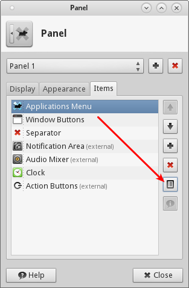 |
| Click the top panel's Items tab, then click properties for the Applications Menu |
Then, per the screenshot below uncheck 'Show Button Title', check 'Show icons in menu'. Click the default Xfce icon button, and select the Fedora icon as shown.
| 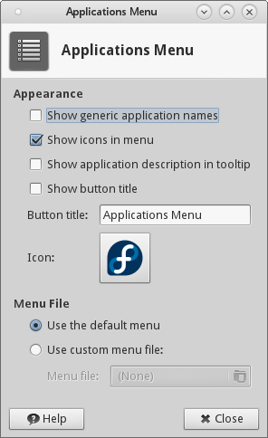 |
| Uncheck Show button title, select Fedora Icon |
Returning to the top panel Items tab, click Window Buttons and then Properties
| 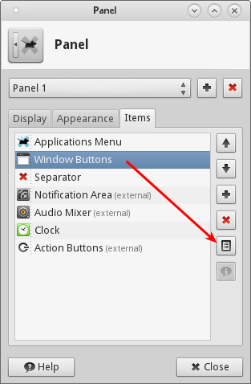 |
| Select Panel Items Windows Buttons Properties |
Per the below screenshot, on the Window Button dialog set the Show button label and Show handle to unchecked, and the Show flat button to checked.
| 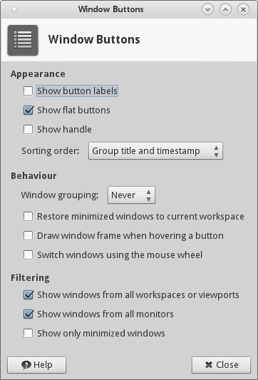 |
| Uncheck Show Button Labels, Show Handle; Check Show Flat Buttons |
Finally, go to the menu Settings, Settings Manager, Window Manager, set the Window Title font to Droid Sans Bold.
| 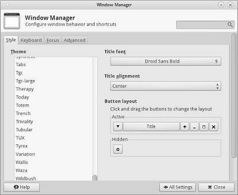 |
| Set the Window Title Font to Droid Sans Bold in Settings Window Manager |
And here is the desktop with all of the above settings:
 |
| Fedora 18 Xfce Desktop Pimped Out! |
Conclusion
The end result is a really easy on the eyes Desktop and the Droid true type font really is a big improvement in readability.
Now, come on Folks. You can't tell me that Gnome3.8 is any better. I am sorry, but, I was incredulous that I had to go to a website to get the Classic extensions and add a 'Quit' button so I could quit the dang Gnome3.8 desktop. I ask you. How is that an advancement in technology? Answer: It isn't. Pah Leeze.
I'll stay put with Xfce thank you very much.
[Edit: 4/20/2013 5:00PM GMT-5 +Max Wachtel gave a good tip--to remove the frame around the Notification Area, go to Panel, Panel Prefs, Items, click properties on Notification Area, then uncheck Show frame (see below).]
| 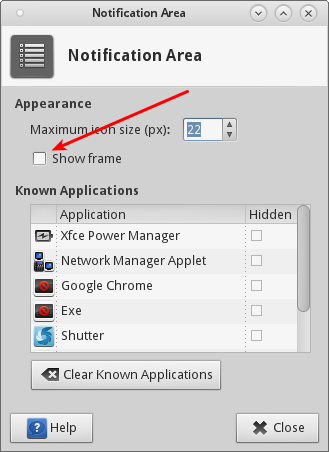 |
| Remove frame around Notification Area, uncheck Show frame check box |
-- Dietrich


{kind=link}
{kind=link}
{kind=link}
{kind=link}
{kind=link}
{kind=link}
{kind=link}
{kind=link}
{kind=link}
{kind=link}
{kind=link}
{kind=link}
{kind=link}